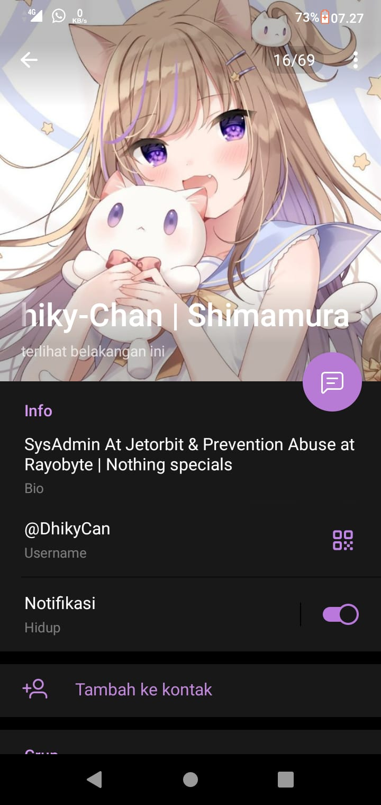

Halo! Saya adalah Purwanto, seorang Guru Perangkat Lunak dengan latar belakang yang kuat dalam dunia informatika. Saya tumbuh dan dibesarkan di Jakarta, ibu kota Indonesia. Setelah menyelesaikan pendidikan tinggi di Universitas Teknologi Nusantara, saya memutuskan untuk memfokuskan karier saya dalam bidang teknologi informasi. Selama beberapa tahun terakhir, saya telah bekerja dengan tekun di industri perangkat lunak, mulai dari mengembangkan aplikasi web hingga mengelola sistem basis data yang kompleks. Setiap tantangan dalam dunia perangkat lunak memberikan peluang baru bagi saya untuk belajar dan tumbuh. Ketika tidak sibuk dengan pekerjaan, saya menikmati waktu bersama keluarga saya. Saya adalah seorang suami yang bahagia dan memiliki dua buah hati yang lucu dan cerdas. Mereka adalah sumber inspirasi utama dalam hidup saya. Saya juga sangat tertarik pada pendidikan dan berbagi pengetahuan. Saya sering menjadi pembicara tamu di berbagai acara teknologi dan memberikan pelatihan kepada siswa-siswa muda yang berminat dalam dunia perangkat lunak. Dengan semangat yang tak pernah padam, saya terus berupaya untuk berkontribusi dalam perkembangan dunia teknologi informasi di Indonesia. Saya percaya bahwa perangkat lunak memiliki potensi besar untuk membawa perubahan positif dalam berbagai bidang, dan saya berkomitmen untuk menjadi bagian dari perubahan tersebut. Terima kasih atas waktu Anda membaca "about me" saya, dan saya berharap dapat berkolaborasi dengan banyak orang yang memiliki hasrat yang sama dalam dunia teknologi informasi.
About me
